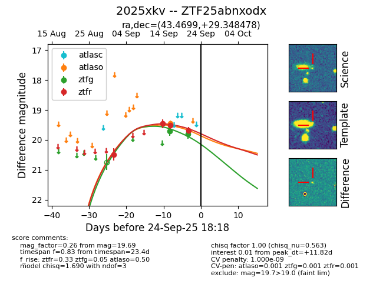
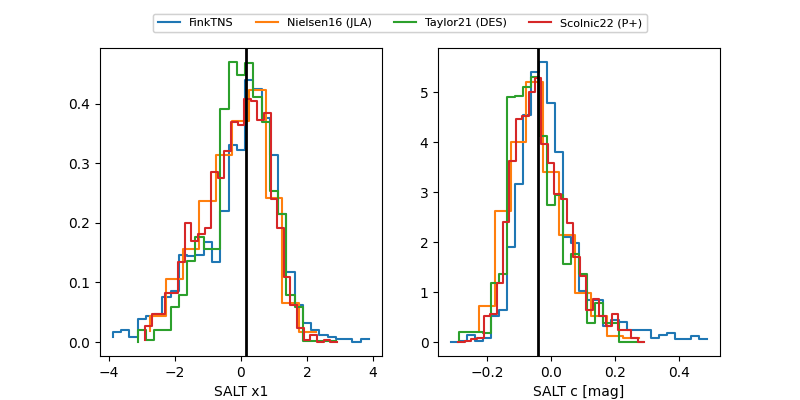

FINK: ZTF25abnxodx
Lasair: ZTF25abnxodx
ALeRCE: ZTF25abnxodx
TNS: 2025xkv
YSE: 2025xkv
ZTF25abnxodx (ztf,fink)
2025xkv (tns,yse)
equatorial (ra, dec) = (43.4699,+29.34848)
galactic (l, b) = (152.6277,-26.37044)


last atlaso=19.45, ztfg=19.80, ztfr=19.69
1 atlaso, 2 ztfg, 4 ztfr detections